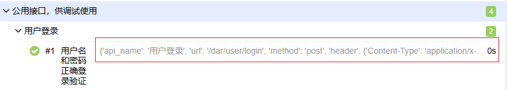

1）修改allure报告logo
1.首先在该路径（E:\python3.8.2\Lib\site-packages\allure-2.13.8\config）allure.yml文件增加一条custom-logo-plugin
plugins:
- junit-xml-plugin
- xunit-xml-plugin
- trx-plugin
- behaviors-plugin
- packages-plugin
- screen-diff-plugin
- xctest-plugin
- jira-plugin
- xray-plugin
- custom-logo-plugin
2.在该路径（E:\python3.8.2\Lib\site-packages\allure-2.13.8\plugins\custom-logo-plugin\static），放入显示的logo
3.修改styles.css文件
.side-nav__brand {
background: url('sinoiov.png') no-repeat left center !important; #url括号内写的就是自己图片的名字，我这里的是logo.png
margin-left: 10px;
height: 40px;
background-size: contain !important;
}
.side-nav__brand span{
display: none;
}
.side-nav__brand:after{
content: "Test Report"; #这是的内容对应的是我logo后面的内容，在接下来的截图中可以看到，如果不写这个样式，默认的就是allure
margin-left: 20px;
}
2）allure报告标题、模块动态显示
@allure.feature('公用接口，供调试使用')
class TestLogin:
@allure.story("用户登录")
@pytest.mark.parametrize('base_info,testcase', get_testcase_yaml('./testcase/public/loginName.yml'))
# @allure.title("用户名和密码正确登录验证")
def test_login_true(self, base_info, testcase):
allure.dynamic.feature(base_info['api_name'])
allure.dynamic.title(testcase['case_name'])
print(f'接口请求地址信息：{base_info}')
print(f'测试用例数据：{testcase}')
3）测试用例换行显示设置，allure标题后面的参数化怎么取消显示

解决方法：找到python的安装路径下的-->\Lib\site-packages\allure_pytest\listener.py
通过查找： test_result.parameters.extend方法，将其注释，在重新写一个方法： test_result.parameters.extend([])

4）如果修改上面第3点的问题-->设置了test_result.parameters.extend方法导致allure报告显示不全，缺少测试用例的情况多半是allure_pytest版本太高，不支持这种设置，你需要降低版本以解决该问题（如果版本是2.13.2以上的多半不支持的，需要降级）
步骤1）：找到pycharm-->setting-->project-->Python Interpreter-->查看allure_pytest版本是多少

步骤2）重新安装allure_pytest，执行下面安装指定版本命令
pip install allure-pytest==2.9.41 -i https://pypi.tuna.tsinghua.edu.cn/simple/